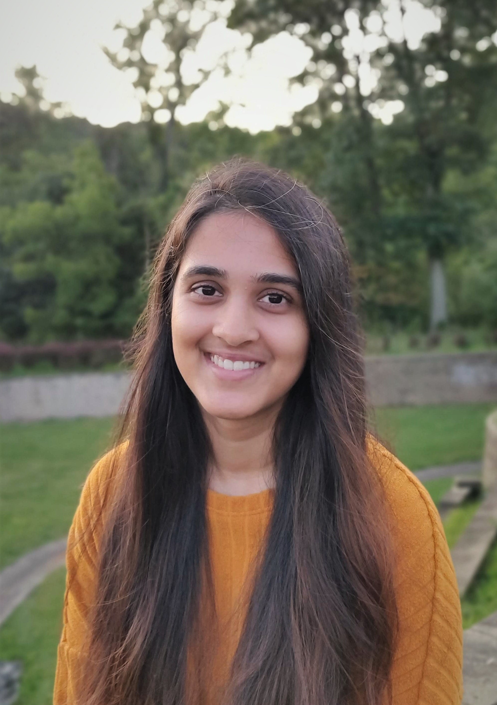

|
Ananya Ganesh
I am a first-year PhD student at CU Boulder, working on natural language processing and machine learning. I am advised by Prof. Katharina Kann and Prof. Martha Palmer. Currently, my research interests are in the applications of NLP to education, particularly in improving classroom discourse. I am also interested in data collection strategies, especially for machine translation.
Previously, I worked as a Research Engineer at the Educational Testing Services (ETS)
in the NLP and speech research group. I graduated from UMass Amherst with a master's degree in
Computer Science, where I worked at IESL on energy-efficient NLP models and semantic role labeling among other things.
Publications
What Would a Teacher Do? Predicting Future Talk Moves
Ananya Ganesh, Martha Palmer, Katharina Kann.
Findings of ACL 2021
Don't Rule Out Monolingual Speakers: A Method For Crowdsourcing Machine Translation Data
Rajat Bhatnagar, Ananya Ganesh, Katharina Kann.
ACL 2021
Training and Domain Adaptation for Supervised Text Segmentation
Goran Glavaš, Ananya Ganesh, Swapna Somasundaran.
BEA 2021 Workshop at EACL
Energy and Policy Considerations for Deep Learning in NLP
Emma Strubell, Ananya Ganesh, Andrew McCallum.
ACL 2019
Efficient Graph-based Word Sense Induction by Distributional Inclusion Vector Embeddings
Haw-Shiuan Chang, Amol Agrawal, Ananya Ganesh, Anirudha Desai, Vinayak Mathur, Alfred Hough, Andrew McCallum.
TextGraphs 2018 Workshop at NAACL-HLT
|
CV |

ananya.ganesh@colorado.edu
CV
|